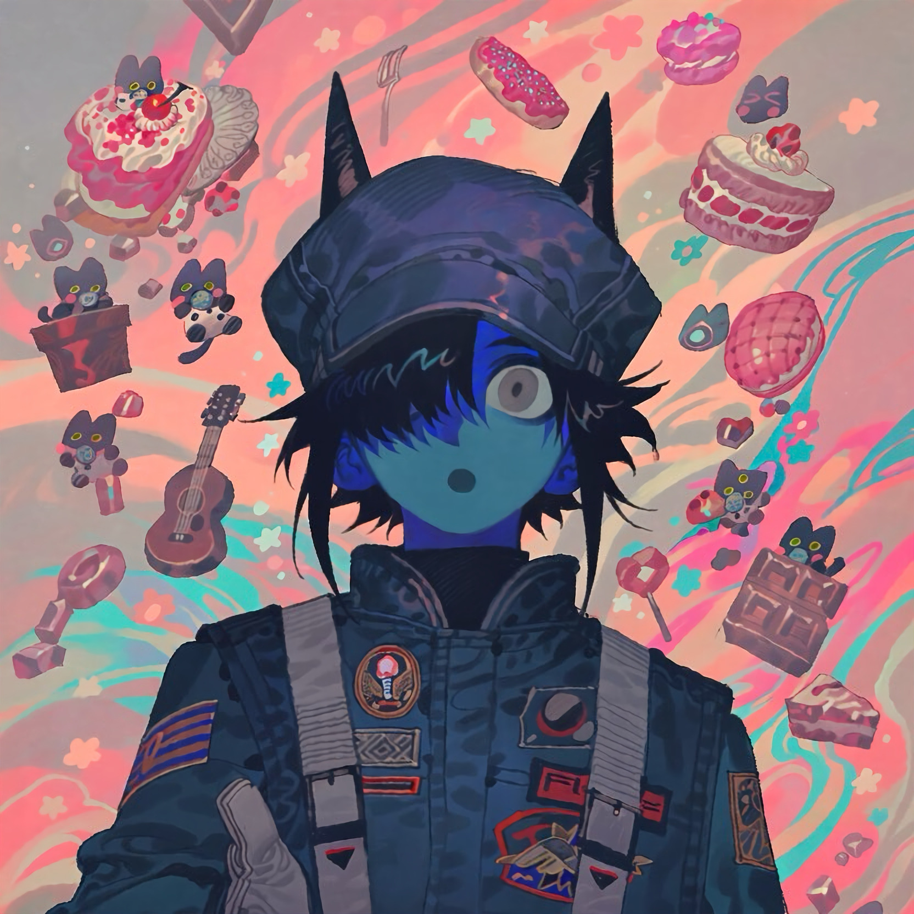

CHARACTER RECORD / 013STATUS: AVAILABLE

✦IMAGE
NOT FOUND
NOT FOUND
ムル
✦ WITH OUTFIT
服装込み
PROMPT DATATXT / 013
boy, male, blue skin, cyan-blue skin, 1.3::short messy black hair, blue highlights, long bangs covering one eye, spiky hair, two pointed hair tufts resembling horns::, 1.4::one wide-open eye, large round grey eye, pale grey iris, tiny pupil, blank stare, empty expression::, black cabbie hat, dark navy pilot cap with pointed protrusions, oversized dark navy flight suit, high collar, black turtleneck, tactical uniform, military patches, embroidered insignia, orange accents, grey harness straps, chest buckles, utility belt, dark gloves, oversized sleeves,